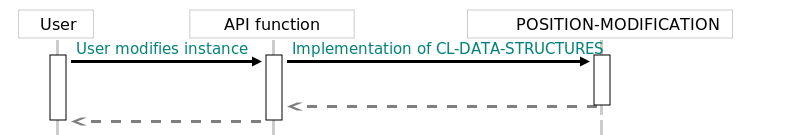

Internal details
This section explains parts of system design and low-level elements that shouldn't bother user of the library. However, they are critical for contributors, and some people just want to know and so shall be delivered.
Docstrings and docstample
Majority of docstrings are constructed and set outside function definitions, in a separate file. This has been done in such way to not clutter the code with information that is easy to obtain by any SLIME user. Furthermore this allows to build doctsrings with the code itself. This makes easier to ensure common, uniform style of docstrings. It may also perform various operations on docstrings. To handle this, a separate project called docstample was created. Hopefully, this tool can be augmented in the future to handle tasks such as automatic validation of examples. This is in fact what is done in this project. Examples are written as unit tests, so they can be checked if they actually work (so users are not getting angry, hopefully). Also, building docstrings from structured input eliminates need for parsing (a language other than lisp itself) to build a nicely formatted output (which is nice).
POSITION-MODIFICATION metaprotocol
The package defines its own internal object protocol that is used to build parts of user API responsible for container modifications. This concept is nicknamed position-modification metaprotocol and is described in this section.
As every object protocol, position-modification metaprotocol consists of classes and generic functions that are expected to be implemented for said classes. Those functions are designed to peform low level (that is: dependent on the internals structure) operations on containers. For instance, those operations include manipulations (and construction) of buckets (and "bucket" is obviously low level term used in description of data structure).
Layer as a whole, derive it's name from one particular generic function called POSITION-MODIFICATION. It acts as a point of implementation for all functionality releated to modification of containers and therefore is called directly by functions like INSERT. Methods implementing POSITION-MODIFICATION act by calling other functions of this protocol.
POSITION-MODIFICATION accepts OPERATION as a first argument. OPERATION is object of one of protocol classes FUNCTIONAL-FUNCTION or DESTRUCTIVE-FUNCTION. Objects of those classes include generic functions defined as part of the API. This is made possible by the fact that Generic Functions in Common Lisp are in fact objects of their own classes. In addition to those fundamental classes, protocol contains additional trait classes like for instance the GROW-FUNCTION. Because of this, it is possible to query API functions for expected behavior. It also makes possible to write methods that dispatch on behavior of the API functions. These include (as already established) bucket manipulation functions: SHRINK-BUCKET, GROW-BUCKET, MAKE-BUCKET.
Because all of those functions are generic ; and just like POSITION-MODIFICATION they accept OPERATION argument, it is possible to dispatch bucket modification logic, based on the class of the API function. Employing this approach allows to remove code duplication between various types of modification functions, and therefore reduce the burden of supporting functions like ERASE-IF in the codebase. Furthermore, establishing this protocol allows to alter standard behavior of buckets, and by that, create nested data structures.
Nested data structures are nontrivial problem when immutable behavior is expected. In most cases immutability is achieved by using copy-on-write semenatic. Because copying in nested structures has to happen on multiple levels, It is essential to be able to intercept logic at the lower level of data structure. Luckly, as described, Common Lisp offers tools that allowed us to build elegant solution for such problem.
Generic Functions
Symbols in package CL-DATA-STRUCTURES:- Container (new or the same instance)
- Modification status
- Bucket.
- Instance of modification-operation-status.
- Boolean. T if element was added into container, NIL otherwise. If NIL was returned, POSITION-MODIFICATION may assume that container was not changed, and therefore ignore returned bucket.
- Bucket. May also return nil to indicate empty bucket.
- Instance of modification-operation-status.
- Boolean. T if element was removed from container, NIL otherwise. If NIL was returned, POSITION-MODIFICATION may assume that container was not changed, and therefore ignore returned bucket.
- New or passed bucket.
- Instance of position modification status.
- Boolean. T if returned bucket contains new elements, NIL otherwise. If NIL was returned, position-modification is free to ignore first value.
- New or passed bucket. May return nil as empty bucket.
- Instance of position modification status.
- Boolean. T if elements were removed from BUCKET, NIL otherwise. If NIL was returned, position-modification is free to ignore first value.
Classes
Symbols in package CL-DATA-STRUCTURES:Description: Function that inherits this class is not allowed to perform any side effects.
Description: Function that inherits this class is expected to perform side effects.
Description: Function will attempt to remove element from container.
Description: Function will attempt to add new element to container.
Description: Class of INSERT and (SETF AT).
Description: Class of UPDATE and UPDATE!.
Description: Class of ADD and ADD!.
Description: Class of ERASE and ERASE!.
Description: Class of ERASE-IF.
Description: Class of INSERT.
Description: Class of UPDATE.
Description: Class of ADD.
Description: Class of ERASE.
Description: Class of INSERT.
Description: Class of UPDATE.

Description: Class of ADD.
Description: Class of ERASE.
Description: Class of ERASE-IF!.
Lazy evaluation
This system offers the lazy-evaluated containers. Lazy evaluation is useful primarly because eager functional data structures may have somewhat sluggish performance if multiple, full copy-on-write operations have to be performed when inserting or erasing large number of records from the container. Lazy evaluation allows to hide destructive operations behind functional interface, and therefore help to counter this issue. Effectivness of this technique varies greatly, and depends on both internal structure of the container, as well it's current content. However, what remains constant is approach used in implementation of lazy evaluation in this library.
As already established in the Overview section, this library contains transactional variants of some of the data structures. Because transactional data structures form a wall isolating destructive changes, they can be used for the internal parts of the lazy evaluation style optimalization. Now, the other part of the recipe is to build functional interface around transactional instance. This essentially requires us to use to proxy objects that will fully adapt mutable interface into functional interface. Because of symetric design of the containers API, each destructive function has also functional counterpart. This makes the task fairly easy.
To translate functional API function calls into mutable calls, new class called LAZY-BOX-CONTAINER is introduced. LAZY-BOX-CONTAINER is holding the transactional instance of container alongside the CHANGES instance. All functional variants of API functions applicable to the internal instance, are applicable to the LAZY-BOX-CONTAINER instance as well and return values consinstent with the documentation. This is done by either manually implementing methods to work on LAZY-BOX-CONTAINER (this is the case for all query functions) or by intercepting internal low level mechanisms of position modification metaprotocol (the case for all modification functions). In other words, the LAZY-BOX-CONTAINER is (according to the design patterns terminology) a proxy. By implementing this interface, it is became possible to capture and enclose all modification calls in closures that can be executed later. Each time POSITION-MODIFICATION method for LAZY-BOX-CONTAINER is called new instance of the LAZY-BOX-CONTAINER with a additional closure (as well as a reference to the previous closures) and the isolated transactional instance is getting created and passed to the user. Now, the question arise: when it is required to call closures on the internal container?
The answer to this question is simple: cl-data-structures will call the closures only when user will query the state of the container. This will in turn destructivly change the internal container, however because of transactional semantics, changes will not leak outside. Finally, the query can be finished by forwarding call to freshly transformed internal container. At this point closures in the LAZY-BOX-CONTAINER can be discarded, as changes have been fully transfered to the state of the internal container. This creates the ilusion of fully functional interface, while minimizing the cost of copy-on-write procedure.
To summarise: lazy evaluation of the data structures is taken care of as long as transactional variant of data structure is available.